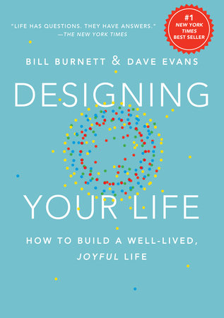

Designing Your Life
Friday December 29, 2017
I heard about Designing Your Life in an episode of Shankar Vedantam's Hidden Brain. The book roughly follows a workshop format of a Stanford class. It's quick to read—slower to do—and full of fun examples and good reminders.

There are five core recommendations:
- be curious (curiosity)
- try stuff (bias to action)
- reframe problems (reframing)
- know it's a process (awareness)
- ask for help (radical collaboration)
The authors identify two concepts to be wary of:
- gravity problems: things that can't be productively addressed directly, just as eliminating the force of gravity isn't possible
- anchor problems: things that prevent progress because of overcommitment to one issue, solution path, etc.
Both of these "problems" may involve "dysfunctional beliefs" that may be better reframed.
The bulk of the text is around a number of activities:
- Evaluate your life along dimensions of love, play, work, and health.
- Write out a "workview" and "lifeview" and think about how they interact.
- Keep track of what you actually enjoy doing ("good time journal").
- Use mind mapping and brainstorming.
- Take incremental steps to learn/try/change things ("prototyping").
- Imagine multiple possible futures ("three odyssey plans") not just one "right" path.
- Network by meeting people ("life design interviews") don't just apply for listed jobs.
- Log and reflect on failures to find growth areas ("failure log").
The chapter on "How not to get a job" is very sensible.
Toward the end, the book is somewhat philosophical. It references Finite and Infinite Games and talks about a "failure immunity" point of view (positive psychology).
The Hidden Brain episode was called "Getting Unstuck." That describes the book's utility. The ideas are not revolutionary, but it is nice to be reminded, especially when in a rut, to be positive, think creatively, make small improvements, and try new things. The activities in the book help to operationalize these recommendations.